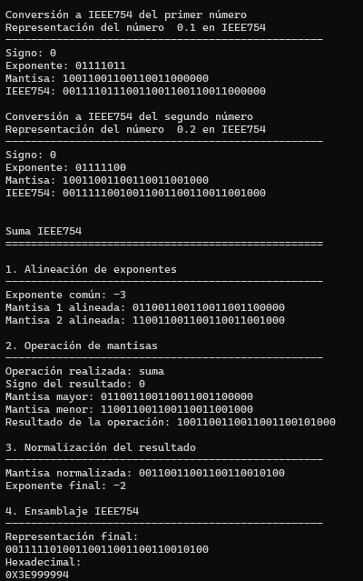

Implementación del Algoritmo de Suma en Notación de Coma Flotante IEEE 754
Índice
1. Introducción
El estándar IEEE 754 define la representación y las operaciones aritméticas para números en punto flotante utilizadas por la mayoría de los procesadores actuales.
En este trabajo se desarrolla una implementación en Python del algoritmo de suma de números en formato IEEE 754 de precisión simple (32 bits), siguiendo las etapas descritas en el estándar y en la literatura de Arquitectura de Computadores.
El objetivo es comprender el funcionamiento interno de la unidad de punto flotante, implementando manualmente las diferentes etapas de la suma binaria.
2. Objetivos
- Comprender la representación IEEE 754 de precisión simple.
- Implementar el algoritmo de suma de punto flotante.
- Analizar cada etapa del algoritmo mediante ejemplos.
- Verificar el correcto funcionamiento mediante diferentes pruebas.
3. Fundamento teórico
Un número IEEE 754 de precisión simple ocupa 32 bits distribuidos de la siguiente forma:
| Campo | Bits |
|---|---|
| Signo | 1 |
| Exponente | 8 |
| Mantisa | 23 |
El valor representado está dado por
\[ (-1)^S \times 1.M \times 2^{E-127} \]
donde:
- S representa el bit de signo.
- E es el exponente con sesgo.
- M corresponde a la mantisa.
Antes de realizar una suma en punto flotante se siguen las siguientes etapas:
- Comparar exponentes.
- Alinear mantisas.
- Realizar la operación.
- Normalizar el resultado.
- Reempacar el número en formato IEEE754.
4. Descripción del algoritmo
El algoritmo desarrollado se divide en cinco etapas principales.
4.1. Conversión de decimal a IEEE754
Primero se obtiene el signo del número.
def obtenerSigno(numero):
"""
Devuelve el bit de signo según IEEE754
"""
if numero < 0:
return 1
else:
return 0
Posteriormente el número se separa en parte entera y decimal.
def separarPartes(numero):
"""
Separa un número en su parte entera y decimal
"""
numero = abs(numero)
entero = int(numero)
decimal = numero - entero
return entero, decimal
La parte entera se convierte a binario.
def convertirEnteroBinario(entero):
"""
Devuelve la parte entera en binario
"""
return bin(entero).replace("0b","")
La parte fraccionaria se convierte utilizando el algoritmo visto en clase.
def convertirDecimalBinario(decimal):
"""
Convierte la parte decimal a binario
"""
bits = ""
while decimal != 0 and len(bits) < 23:
decimal *= 2
if decimal >= 1:
bits += "1"
decimal -= 1
else:
bits += "0"
if bits == "":
return "0"
return bits
Se unen ambas partes.
def convertirBinario(numero):
"""
Convierte un número decimal a binario
"""
entero, decimal = separarPartes(numero)
return convertirEnteroBinario(entero) + "." + convertirDecimalBinario(decimal)
Posteriormente se normaliza el número.
def normalizar(binario):
"""
Normaliza el número binario
"""
entero, decimal = binario.split(".")
if entero != "0":
exponente = len(entero) - 1
mantisa = entero[1:] + decimal
return mantisa, exponente
indice = decimal.index("1")
exponente = -(indice + 1)
mantisa = decimal[indice + 1:]
return mantisa, exponente
El exponente se sesga con 127.
def calcularExponente(exponente):
"""
Calcula el exponente sesgado
"""
exponente = exponente + 127
binario = bin(exponente).replace("0b","")
return binario.zfill(8)
Finalmente la mantisa se ajusta a 23 bits.
def ajustarMantisa(mantisa):
"""
Ajusta la mantisa a 23 bits
"""
return mantisa.ljust(23,"0")
Con todas las funciones anteriores se implementa la conversión completa.
def convertirIEEE754(numero):
"""
Convierte un número decimal a IEEE754
"""
if numero == 0:
return {
"signo":"0",
"exponente":"00000000",
"mantisa":"00000000000000000000000",
"ieee754":"00000000000000000000000000000000"
}
signo = str(obtenerSigno(numero))
binario = convertirBinario(numero)
mantisa, exponente = normalizar(binario)
exponenteIEEE = calcularExponente(exponente)
mantisaIEEE = ajustarMantisa(mantisa)
ieee754 = signo + exponenteIEEE + mantisaIEEE
return {
"signo":signo,
"binario":binario,
"exponenteReal":exponente,
"exponenteSesgado":exponenteIEEE,
"mantisa":mantisaIEEE,
"ieee754":ieee754
}
4.2. Alineación de exponentes
Para poder sumar dos números IEEE754 ambos deben poseer el mismo exponente.
def alinearExponentes(exp1,mant1,exp2,mant2):
mant1 = "1" + mant1
mant2 = "1" + mant2
while exp1 < exp2:
mant1 = "0" + mant1[:-1]
exp1 += 1
while exp2 < exp1:
mant2 = "0" + mant2[:-1]
exp2 += 1
return exp1, mant1, mant2
print(
alinearExponentes(
1,
"01000000000000000000000",
0,
"01000000000000000000000"
)
)
(1, '101000000000000000000000', '010100000000000000000000')
4.3. Determinación del tipo de operación
Una vez alineados los exponentes, el algoritmo determina si debe realizar una suma o una resta dependiendo del signo de ambos operandos. Cuando los signos son diferentes, también se determina cuál de las mantisas tiene el mayor valor absoluto para garantizar que la resta produzca un resultado positivo.
def determinarSignoYOrden(signo1, signo2, mant1, mant2):
"""
Compara los signos para decidir si se suma o se resta.
Además, ordena las mantisas para que la resta sea siempre positiva,
y determina cuál será el signo del resultado final.
"""
val1 = int(mant1, 2)
val2 = int(mant2, 2)
if signo1 == signo2:
return signo1, "suma", mant1, mant2
else:
if val1 >= val2:
return signo1, "resta", mant1, mant2
else:
return signo2, "resta", mant2, mant1
print(
determinarSignoYOrden(
"0",
"1",
"101000000000000000000000",
"010100000000000000000000"
)
)
('0', 'resta', '101000000000000000000000', '010100000000000000000000')
4.4. Operación entre mantisas
La suma y la resta de las mantisas se implementan utilizando únicamente operaciones binarias bit a bit, reproduciendo el comportamiento de una unidad aritmética lógica.
def operarMantisas(mantMayor, mantMenor, operacion):
"""
Suma o resta mantisas binarias utilizando operaciones
bit a bit.
Retorna el resultado en binario.
"""
while len(mantMayor) > len(mantMenor):
mantMenor = "0" + mantMenor
while len(mantMenor) > len(mantMayor):
mantMayor = "0" + mantMayor
if operacion == "suma":
resultado = ""
acarreo = 0
# Se recorren las cadenas desde el bit menos significativo
for i in range(len(mantMayor)-1, -1, -1):
bit1 = int(mantMayor[i])
bit2 = int(mantMenor[i])
suma = bit1 + bit2 + acarreo
if suma == 0:
resultado = "0" + resultado
acarreo = 0
elif suma == 1:
resultado = "1" + resultado
acarreo = 0
elif suma == 2:
resultado = "0" + resultado
acarreo = 1
else:
resultado = "1" + resultado
acarreo = 1
if acarreo == 1:
resultado = "1" + resultado
return resultado
else:
# Resta binaria
resultado = ""
prestamo = 0
for i in range(len(mantMayor)-1, -1, -1):
bit1 = int(mantMayor[i]) - prestamo
bit2 = int(mantMenor[i])
if bit1 < bit2:
bit1 += 2
prestamo = 1
else:
prestamo = 0
diferencia = bit1 - bit2
resultado = str(diferencia) + resultado
return resultado
print(
operarMantisas(
"101000000000000000000000",
"010100000000000000000000",
"suma"
)
)
111100000000000000000000
4.5. Normalización del resultado
Después de la operación puede aparecer un acarreo adicional o bien desaparecer el bit implícito debido a una resta. En ambos casos es necesario ajustar nuevamente el exponente y la mantisa.
def normalizarResultado(mantResultado, expComun):
if mantResultado == "0":
return "0", 0
exponente = expComun
# Caso suma
if len(mantResultado) > 24:
mantResultado = mantResultado[1:]
exponente += 1
# Caso resta
while mantResultado[0] == "0":
mantResultado = mantResultado[1:] + "0"
exponente -= 1
mantisa = mantResultado[1:]
return mantisa[:23], exponente
print(
normalizarResultado(
"111100000000000000000000",
1
)
)
('11100000000000000000000', 1)
4.6. Ensamblaje final
Una vez obtenidos el signo, el exponente y la mantisa normalizados, se construye nuevamente la palabra de 32 bits correspondiente al formato IEEE754.
def ensamblarIEEE754(signo, exponenteReal, mantisa):
"""
Construye el número IEEE754 final.
"""
if mantisa == "0" and exponenteReal == 0:
return "00000000000000000000000000000000"
exponenteIEEE = calcularExponente(exponenteReal)
mantisaIEEE = ajustarMantisa(mantisa)[:23]
return signo + exponenteIEEE + mantisaIEEE
4.7. Función principal
La siguiente función integra todas las etapas del algoritmo descritas anteriormente.
def sumarIEEE754(num1, num2):
"""
Función principal del algoritmo.
"""
if num1 == 0:
return {
"resultadoIEEE754": convertirIEEE754(num2)["ieee754"]
}
if num2 == 0:
return {
"resultadoIEEE754": convertirIEEE754(num1)["ieee754"]
}
ieee1 = convertirIEEE754(num1)
ieee2 = convertirIEEE754(num2)
expComun, mant1Alineada, mant2Alineada = alinearExponentes(
ieee1["exponenteReal"],
ieee1["mantisa"],
ieee2["exponenteReal"],
ieee2["mantisa"]
)
signoFinal, operacion, mantMayor, mantMenor = determinarSignoYOrden(
ieee1["signo"],
ieee2["signo"],
mant1Alineada,
mant2Alineada
)
mantResultado = operarMantisas(
mantMayor,
mantMenor,
operacion
)
mantNormalizada, expFinal = normalizarResultado(
mantResultado,
expComun
)
resultado = ensamblarIEEE754(
signoFinal,
expFinal,
mantNormalizada
)
return {
"exponenteComun": expComun,
"mantisa1Alineada": mant1Alineada,
"mantisa2Alineada": mant2Alineada,
"signoFinal": signoFinal,
"operacion": operacion,
"mantisaMayor": mantMayor,
"mantisaMenor": mantMenor,
"mantisaResultado": mantResultado,
"mantisaNormalizada": mantNormalizada,
"exponenteFinal": expFinal,
"resultadoIEEE754": resultado
}
5. Capturas de ejecución
En esta sección se incluyen las capturas de pantalla obtenidas durante la ejecución del programa.
- Conversión del primer operando.
- Conversión del segundo operando.
- Alineación de exponentes.
- Determinación de la operación.
- Operación sobre las mantisas.
- Normalización del resultado.
- Ensamblaje del número IEEE754.
- Resultado final.

Figura 1: Ejecución del algoritmo para la suma 3.5 + 1.25

Figura 2: Ejecución del algoritmo para la suma 2.5 + (-1.24)

Figura 3: Ejecución del algoritmo para la suma (-5) + (-34)

Figura 4: Ejecución del algoritmo para la suma 100 + 0.25

Figura 5: Ejecución del algoritmo para la suma 0.1 + 0.2
6. Conclusiones
- Se implementó satisfactoriamente el algoritmo de suma de números en formato IEEE754 de precisión simple empleando Python.
- El desarrollo permitió comprender el funcionamiento interno de una unidad de punto flotante, especialmente el proceso de alineación de exponentes, operación entre mantisas y normalización del resultado.
- La implementación reproduce las principales etapas descritas por el estándar IEEE754 para la suma en punto flotante.
- Las pruebas realizadas con números positivos, negativos, enteros y fraccionarios mostraron resultados consistentes con la representación IEEE754 de precisión simple.
- El ejemplo al sumar 0.1 + 0.2 representa los errores que se puede acarrear al momento de trabajar con números muy pequeños, al obtener un valor un tanto diferente al 0.3 esperado. Esto sucede ya que el algoritmo trunca los decimales menos significativos
7. Extra: Ejecución interactiva mediante JavaScript
La implementación principal del algoritmo IEEE754 fue desarrollada en Python. Sin embargo, debido a que los navegadores no pueden ejecutar directamente código Python, se desarrolló una versión interactiva utilizando JavaScript, el cual puede ser interpretado directamente por el navegador.
Suma IEEE754 interactiva
Ingrese dos números para obtener su representación IEEE754.
Resultado:
8. Referencias
- IEEE Computer Society. IEEE Standard for Floating-Point Arithmetic (IEEE Std 754-2019). IEEE, 2019.
- Stallings, William. Computer Organization and Architecture: Designing for Performance. 11th Edition. Pearson.